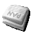

Newsreader
Das Usenet besteht aus hierarchisch geordneten Newsgroups und ist das wohl älteste elektronische Netzwerk. Newsgroups sind textbasierte Diskussionsgruppen, an denen man sich ohne Registrierung beteiligen kann.
Es gibt zahlreiche Newsreader für diverse Plattformen. Generell ist es auch möglich, über das Web-Interface von Google Groups  an Newsgroups teilnehmen, dies hat aber bis auf die Flexibilität bei der Nutzung verschiedener Rechner wenig Vorteile und wird auch nicht gern gesehen. Dieser Artikel bietet eine Übersicht über die in den Ubuntu-Quellen erhältlichen Newsreader.
an Newsgroups teilnehmen, dies hat aber bis auf die Flexibilität bei der Nutzung verschiedener Rechner wenig Vorteile und wird auch nicht gern gesehen. Dieser Artikel bietet eine Übersicht über die in den Ubuntu-Quellen erhältlichen Newsreader.
Voraussetzungen¶
Um Newsgroups lesen und sich an ihnen beteiligen zu können, bedarf es im Wesentlichen dreier Voraussetzungen:
Verhaltensregeln: Um die zahlreich aufgestellten Fettnäpfchen galant zu umgehen, sollte man sich zuerst mit den Verhaltensregeln und Eigenheiten des Usenet - der Netiquette - vertraut machen.
Zugang: Neben einer bestehenden Internetverbindung benötigt man Zugang zu einem Newsserver. Diesen bekommt man bei vielen ISPs automatisch, ansonsten gibt es die Möglichkeit, sich kostenlos bei einem Anbieter zu registrieren. Eine Liste mit Anbietern im deutschsprachigen Raum gibt es auf cord.de
. Newsreader: Zum Lesen von Newsgroups benötigt man eine entsprechende Software, den Newsreader. Dabei kann es sich sowohl um Anwendungen mit grafischer Oberfläche (GUI) als auch Programme für die Kommandozeile (CLI) handeln. Wie man der unten stehenden Auflistung entnehmen kann, sind viele E-Mail-Programme auch gleichzeitig Newsreader. Es bedarf also nur der Einrichtung eines neuen Kontos im jeweiligen Programm. Nach dem Einrichten des Newsreaders empfiehlt es sich, die Konfiguration mit einem Eintrag (Posting) in eine Test-Gruppe auf Richtigkeit zu überprüfen.
Newsreader¶
Evolution¶
Evolution ist die PIM-Anwendung der GNOME Desktopumgebung. Im E-Mail-Client ist auch die News-Funktion integriert, die alle Standardaufgaben eines Newsreader erfüllt. Wie man Evolution zum Lesen und Posten ins Usenet einrichtet, ist im Artikel Evolution beschrieben.
KNode¶
KNode  ist der Newsreader für die KDE-Umgebung und als Bestandteil von Kontact nutzbar. Das Programm fügt sich sehr gut sowohl in KDE als auch in GNOME ein. Für Modemnutzer ist KNode nicht sehr gut geeignet, das es kein Offline-Lesen unterstützt.
ist der Newsreader für die KDE-Umgebung und als Bestandteil von Kontact nutzbar. Das Programm fügt sich sehr gut sowohl in KDE als auch in GNOME ein. Für Modemnutzer ist KNode nicht sehr gut geeignet, das es kein Offline-Lesen unterstützt.
Mozilla Thunderbird¶
Thunderbird ist der E-Mail-Client der Mozilla Foundation und beinhaltet auch einen brauchbaren Newsreader. Da der Thunderbird auch für Windows und Mac OS erhältlich und verbreitet ist, bietet er sich gerade auch für Umsteiger an. Wie man Thunderbird zum Lesen und Posten ins Usenet einrichtet, ist unter Thunderbird/Einrichtung beschrieben.
Pan¶
 Pan ist ein leistungsstarker, desktopunabhängiger Newsreader und der Standard-Newsreader der Desktopumgebung GNOME. Er ist auch wesentlich spezialisierter als Evolution. Neben dem Offline-Lesen unterstützt Pan auch Binaries.
Claws Mail / Sylpheed¶
Sowohl in Sylpheed wie auch in der Abspaltung (Fork) Claws Mail lässt sich anstelle eines E-Mail-Kontos auch ein Usenet-Konto (NNTP) einrichten und wie ein normales E-Mail-Konto benutzen. Durch einen  -Klick auf den neu erscheinenden NNTP-Ordner in der Ordnerübersicht kann man durch Klicken auf "Add Newsgroup" die Newsgroups durchsuchen und abonnieren wodurch für sie ein eigener Ordner angelegt wird, in dem die Nachrichten erscheinen. Man kann dann wie - auf eine normale E-Mail - antworten oder neue Beiträge schreiben.
-Klick auf den neu erscheinenden NNTP-Ordner in der Ordnerübersicht kann man durch Klicken auf "Add Newsgroup" die Newsgroups durchsuchen und abonnieren wodurch für sie ein eigener Ordner angelegt wird, in dem die Nachrichten erscheinen. Man kann dann wie - auf eine normale E-Mail - antworten oder neue Beiträge schreiben.
Sonstige¶
Links¶
Das Nutznetz – eine Einführung
- Volkers Usenet-Seiten Das deutschsprachige Usenet
- Allgemeines, Netiquette, Akronyme und mehr Usenet-Laws
- irgendwas ist immer Öffentliche Newsserver finden
news.albasani.net
- freier und kostenloser Newsserver
- Erstellt mit Inyoka
-
 2004 – 2017 ubuntuusers.de • Einige Rechte vorbehalten
2004 – 2017 ubuntuusers.de • Einige Rechte vorbehalten
Lizenz • Kontakt • Datenschutz • Impressum • Serverstatus -
Serverhousing gespendet von